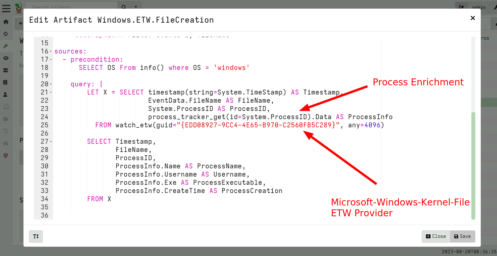
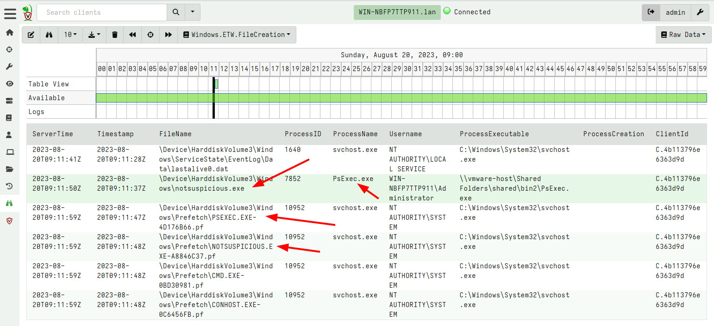
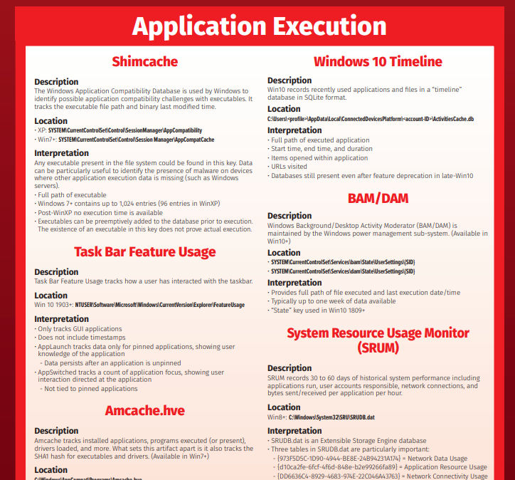

<!-- .slide: class="content" --> ## Leveraging ETW for visibility * Using ETW we gain access to more valuable forensic information anyway!  --- <!-- .slide: class="content" --> ## Leveraging ETW for visibility  --- <!-- .slide: class="content" --> ## Process execution <div class="container"> <div class="col"> * Many artifacts around process execution * None of them are perfect! * Missing data: * Parent process (Call chain) * User that launched the process * Limited number of last run timestamps </div> <div class="col">  </div> --- <!-- .slide: class="content" --> ## Preparing for Process Execution * By far the best preparation is to install Sysmon or process logging. * This has some very small overhead but it is so worth it! * Process execution logging gives us context as to activity on the system. --- <!-- .slide: class="content" --> ## Tracking processes * One of the critical questions we ask is `Where did this process come from?` * Context of where the process came from is important in establishing initial access vector! * We could collect all process execution from all endpoints, but: * This will generate a large volume of events. * Vast majority of events are not interesting. * Often determining which process is interesting is determined by context. --- <!-- .slide: class="full_screen_diagram" --> ## Where did notepad process come from? <img src="process_hacker.png" style="height: 500px" > --- <!-- .slide: class="content" --> ## Using Generic.System.Pstree  --- <!-- .slide: class="content" --> ## View process tree  --- <!-- .slide: class="content" --> ## Inspect the process call chain